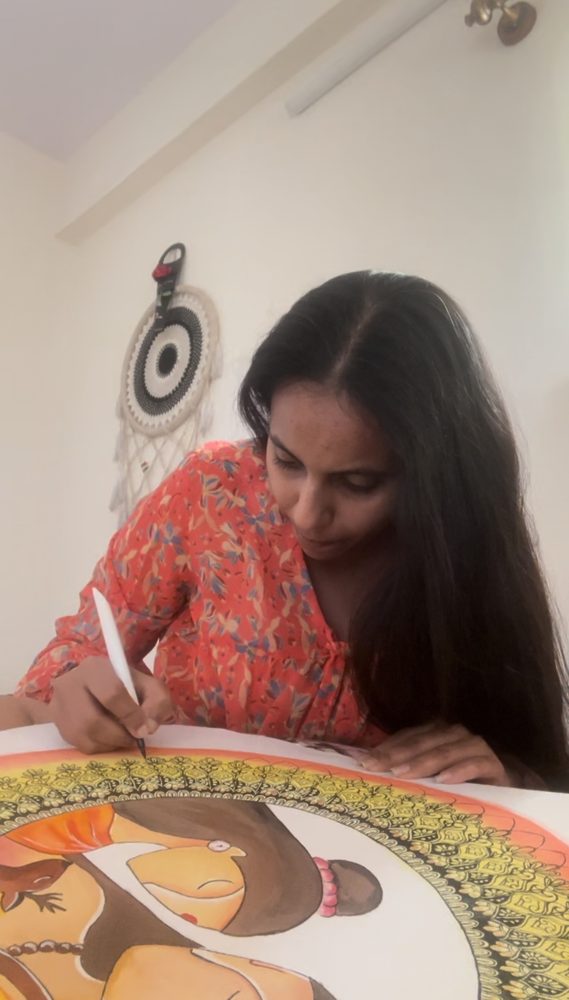

Yashprit Bedi
A curious mind with a soft spot for stories, people, and everything beautiful.
Creative CV · Aspiring Marketer · MBA, BITSoM

My idea of beauty
Soft. Steady.
Still going. soothing things, sober colours, and the quiet habit of moving forward
Still going. soothing things, sober colours, and the quiet habit of moving forward